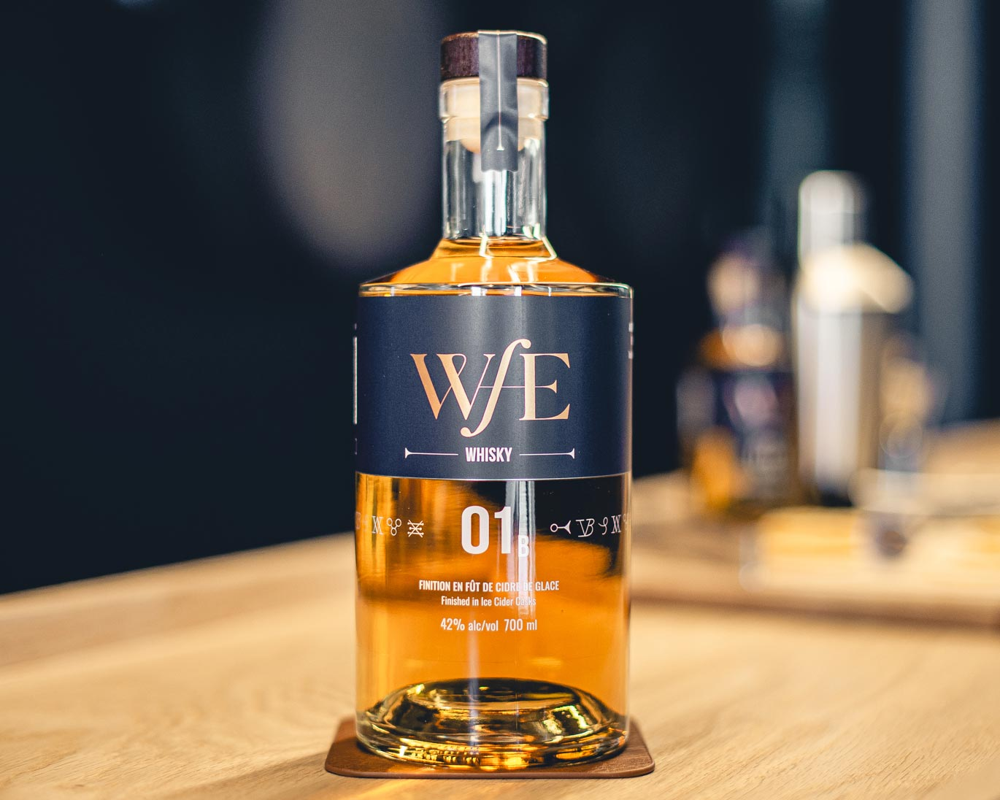
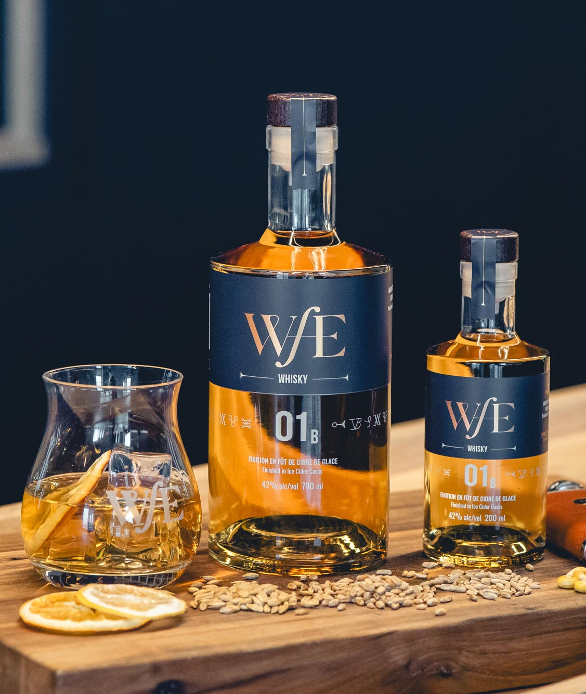
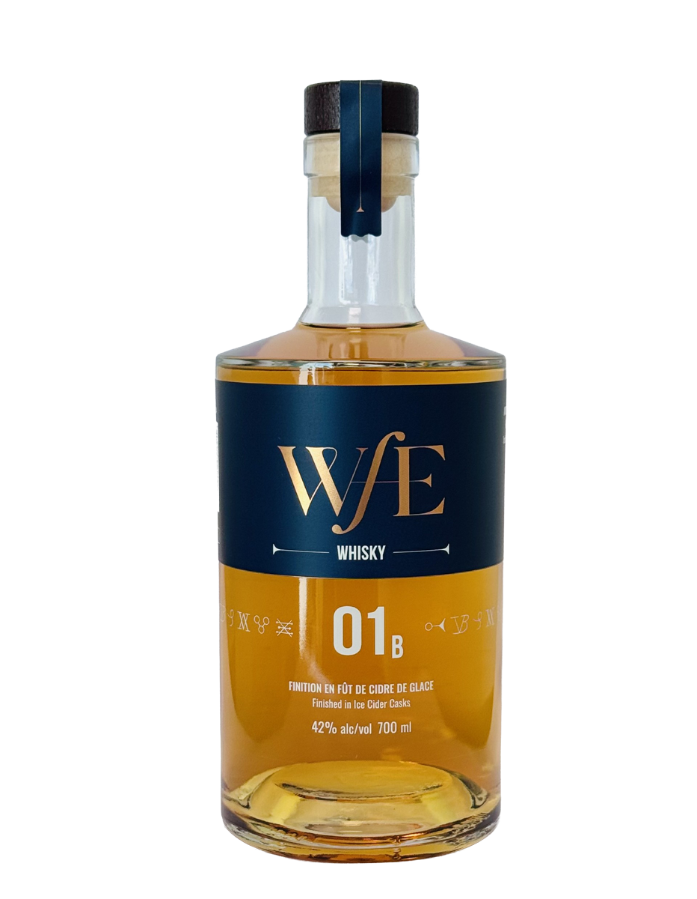

Notre premier chapitre
Blend 01B
Finition en fût de cidre de glace
Whisky 01B
Un assemblage canadien de maïs, seigle, blé et orge malté — affiné en fûts de cidre de glace pour une élégance fruitée inattendue.

Notre promesse
Pas besoin d'être expert. Juste curieux.
WfE se donne pour mission de faire (re)découvrir le whisky au plus grand nombre et de le rendre accessible en le réinventant — sans jamais trahir l'essence des grands classiques.
Animés par l'ouverture, l'audace et un savoir-faire rigoureux, nous déclinons le whisky pour inviter tous les palais à l'exploration.
Les mystères du Blend 01ᵦ
Chaque gorgée raconte
un fragment d'alchimie.
Sur l'étiquette du Blend 01ᵦ, sept symboles sont gravés. Chacun évoque un geste, un matériau, une étape de la transformation — du grain brut jusqu'au verre.
Dégustation
Profil
sensoriel.

-
Robe
Ambre pâle aux reflets cuivrés. Éclatante et lumineuse à la lumière naturelle.
-
Aspect
Brillant et limpide, avec une belle transparence et une viscosité marquée. Les jambes descendent lentement et régulièrement, signe de maturité et d'équilibre.
-
Nez
Bouquet délicat et raffiné, alliant complexité aromatique subtile et parfaite harmonie. Vanille douce, caramel léger et chêne toasté. Le seigle canadien apporte des notes épicées, équilibrées par la rondeur céréalière du blé. L'affinage en fût de cidre de glace ajoute une subtile touche fruitée de pomme et de poire en arrière-plan.
-
Bouche
Attaque douce et enveloppante, marquée par la douceur miellée du maïs, équilibrée par les épices du seigle et une pointe poivrée. En milieu de bouche, caramel, chêne toasté et légères notes fruitées. Le blé apporte rondeur et souplesse, tandis que le whisky de maïs donne de la structure et de la chaleur.
-
Finale
Moyenne à longue, elle s'étire avec chaleur, révélant une persistance élégante de chêne, de vanille et d'épices douces. Une touche subtile de pomme acidulée caresse le palais, sans jamais dominer — laissant place à une sensation aussi longue qu'harmonieuse.
En partenariat avec
Val Caudalie, artisan du cidre de glace.
Les fûts qui affinent le Blend 01ᵦ proviennent de Val Caudalie — vignoble et cidrerie du Québec dont le cidre de glace est élaboré avec la même rigueur que notre whisky. Cette rencontre donne naissance à une finition unique : une douceur fruitée de pomme et de poire, posée en filigrane sur le chêne toasté.

Informations
générales.
| Catégorie | Whisky |
|---|---|
| Degré d'alcool | 42 % |
| Pays d'origine | Canada — élaboré au Québec |
| Composition | Maïs · Seigle · Blé · Orge malté |
| Producteur | Distillerie WfE |
| Finition | Fût de cidre de glace |
| Volumes disponibles | 700 ml, 200 ml |
| Filtration | À froid 5 μm et 1 μm |
| Code SAQ 700 ml | 15614718 |
| Code SAQ 200 ml | 15594083 |
Où l'acheter
Disponible à la SAQ et à la LCBO.
Recommandation : pur ou sur glace. Quelques gouttes d'eau amplifient les arômes. Remplace avantageusement le bourbon dans tout cocktail classique. De préférence, en bonne compagnie.